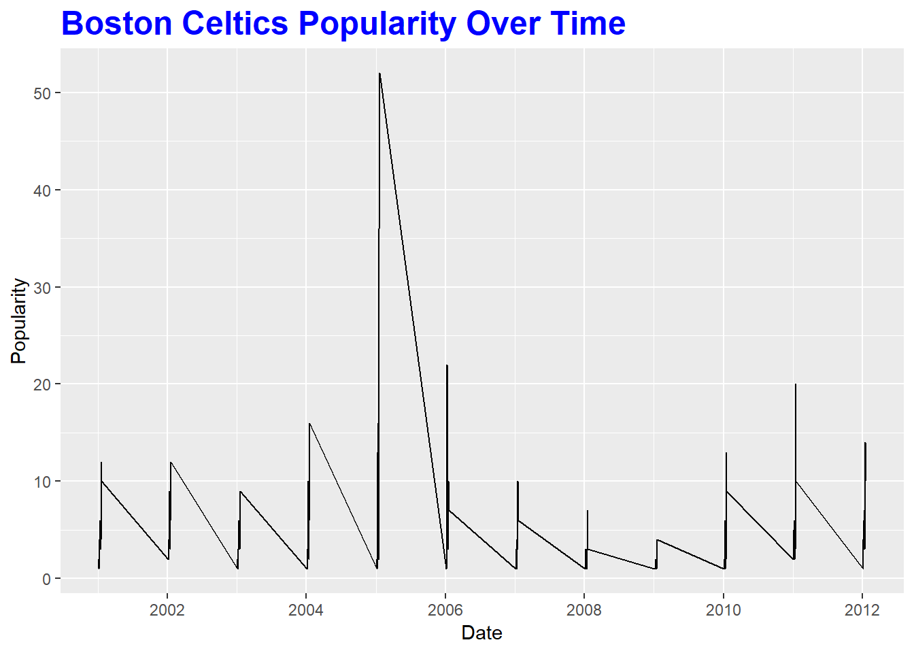
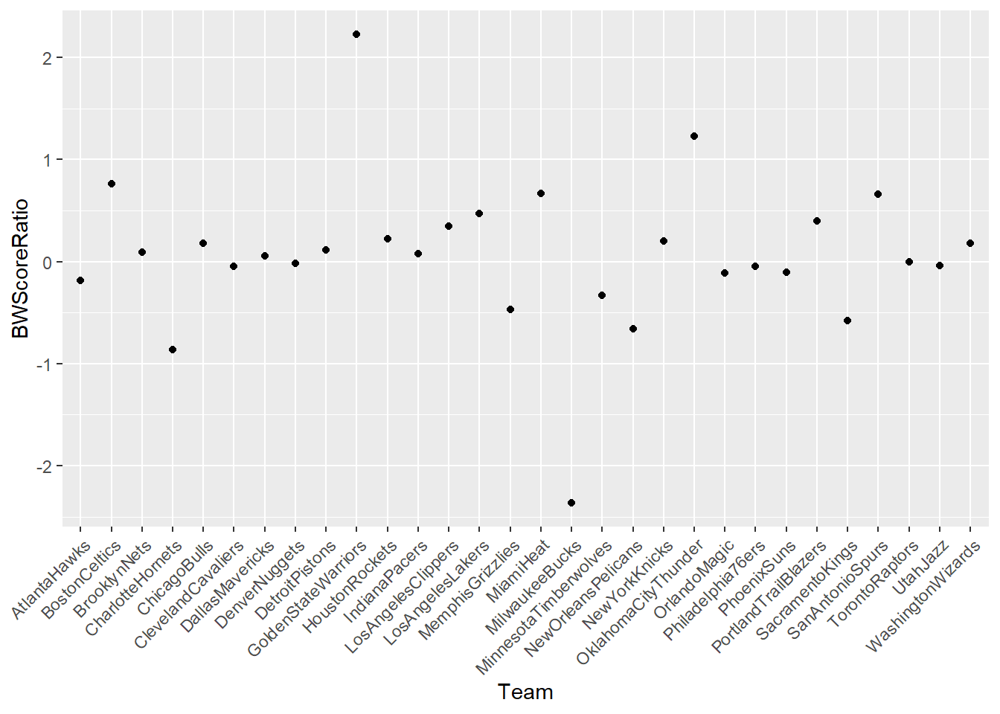

Analyzing Fan Support of NBA Teams Over Time
Victor Wilson, Eric Tran, and Kelly Bodwin
California Polytechnic State University - San Luis Obispo
Introduction
The amount of fan support for a particular team tends to vary throughout the years, and teams within the same league can vary due several factors, such as population size of the city in which the team plays, amount of success attained by the team, among several other factors. The NBA is no different in this regard. Largely in part to this, the term “bandwagon fan” has been floated around in discussion among NBA fans throughout recent years, which typically refers to fans who are not loyal to their teams, and only support them when they are performing well.
With such a large difference in parity among teams in the current NBA, we were interested in analyzing the fan support of NBA teams over time. In order to answer to this question, we developed a plan to make a statistical model to predict NBA fan support, correcting for several factors that we believe affect a team’s support. By doing this, our goal is to be able to state that any deviations from our predicted model and the observed team popularity are a result of fan behavior.
Methods
The data for the measure of the popularity of a particular NBA Team was collected via Google Trends, which provides data on the monthly relative popularity of a search term . This data however, is relative to the absolute maximum value for each team, so to correct for this we compared all values to the overall maximum across all teams (Golden State Warriors in June 2016). This data was also only available for the United States, so searches from other countries such as Canada were not included here.
This dataset was merged with two other datasets that contained data on several variables related to team performance such as Win/Loss record for the season, whether or not the team made the playoffs, and how far the team advanced in the playoffs, and the market size for each city in the United States that is home to an NBA team, as measured by Nielsen Ratings. Just as with the Google Trends data, the Nielsen Ratings were only available for cities within the United States, we were unable to attain a market size value for the Toronto Raptors who play in Canada.

Using the Boston Celtics as an example team, we can look at a plot of their popularity scores throughout time to get a sense of the trends in the data. Here, we see that a general yearly trend appears, with spikes occuring around the same months through multiple years, and sharp drop-offs also occuring around similar months throughout the years.
Research Question
The research question of interest is:
Can we measure the “bandwagon” level of a particular NBA team through a statistical model using various predictors including Win/Loss Percentage, TV Market Size, Level of Success in Playoffs, etc. by analyzing the deviations of our statistical model?
Model
In the process of creating a statistical model to predict popularity scores for each month, we opted to utilize Multiple Linear Regression. We decided to use the predictor variables of market size, the interaction between each month of the year and Win/Loss percentage, and the interaction between each month of the year and playoff success (Did Not Make Playoffs, Lost in 1st Round, etc), with monthly popularity score as the response variable. We are predicting the popularity score for each month as opposed to each day, week, year, or other measure of time to match the Google Trends scores, since Google Trends only provides data for overall monthly popularity, when viewing all of the time points available (since 2004).
We also looked into the possibility of developing a time series model, but the complexities that came along with this model did not appear to offer a feasible trade-off for any possibly gained information. Our model without the time series component also seemed to perform fairly well as is, so we proceeded without including the time series component.

Shown above, the red line represents the predicted popularity scores from our model, whereas the black line represents the actual popularity scores. We can see that our model does a fairly decent job of predicting the popularity scores, and tends to follow the trends in the data well. Upon viewing the coefficients from the model, we find that Market Size, the interaction terms between month of the year and Win/Loss percentage, and the interaction terms for teams that make the NBA Finals and the months of May and June have the largest effects on popularity. Overall, it appears that teams that make the NBA Finals tend to experience much larger popularity scores than teams that did not make the playoffs. Our model takes into account population size and the success level of the team, to correct for the fact that teams that are performing well will likely have higher amounts of searches.
Bandwagon

POIndAov <- lm(Popularity~Playoffs, data=NBAData)
anova(POIndAov)
## Analysis of Variance Table
##
## Response: Popularity
## Df Sum Sq Mean Sq F value Pr(>F)
## Playoffs 5 21846 4369.1 217.26 < 2.2e-16 ***
## Residuals 5454 109679 20.1
## ---
## Signif. codes: 0 '***' 0.001 '**' 0.01 '*' 0.05 '.' 0.1 ' ' 1
TukeyHSD(aov(POIndAov))
## Tukey multiple comparisons of means
## 95% family-wise confidence level
##
## Fit: aov(formula = POIndAov)
##
## $Playoffs
## diff lwr
## Lost 1st Round-Did Not Make Playoffs 0.412860171 -0.01468622
## Lost Conf. Finals-Did Not Make Playoffs 2.255688885 1.54029919
## Lost Conf. Semis-Did Not Make Playoffs 1.281222383 0.72329639
## Lost Finals-Did Not Make Playoffs 8.039820267 7.06154655
## Won Finals-Did Not Make Playoffs 8.034325761 7.05605205
## Lost Conf. Finals-Lost 1st Round 1.842828714 1.08361086
## Lost Conf. Semis-Lost 1st Round 0.868362212 0.25524660
## Lost Finals-Lost 1st Round 7.626960095 6.61619365
## Won Finals-Lost 1st Round 7.621465590 6.61069915
## Lost Conf. Semis-Lost Conf. Finals -0.974466503 -1.81404809
## Lost Finals-Lost Conf. Finals 5.784131381 4.62196302
## Won Finals-Lost Conf. Finals 5.778636876 4.61646852
## Lost Finals-Lost Conf. Semis 6.758597884 5.68615474
## Won Finals-Lost Conf. Semis 6.753103378 5.68066024
## Won Finals-Lost Finals -0.005494505 -1.34559612
## upr p adj
## Lost 1st Round-Did Not Make Playoffs 0.8404066 0.0654806
## Lost Conf. Finals-Did Not Make Playoffs 2.9710786 0.0000000
## Lost Conf. Semis-Did Not Make Playoffs 1.8391484 0.0000000
## Lost Finals-Did Not Make Playoffs 9.0180940 0.0000000
## Won Finals-Did Not Make Playoffs 9.0125995 0.0000000
## Lost Conf. Finals-Lost 1st Round 2.6020466 0.0000000
## Lost Conf. Semis-Lost 1st Round 1.4814778 0.0007769
## Lost Finals-Lost 1st Round 8.6377265 0.0000000
## Won Finals-Lost 1st Round 8.6322320 0.0000000
## Lost Conf. Semis-Lost Conf. Finals -0.1348849 0.0121274
## Lost Finals-Lost Conf. Finals 6.9462997 0.0000000
## Won Finals-Lost Conf. Finals 6.9408052 0.0000000
## Lost Finals-Lost Conf. Semis 7.8310410 0.0000000
## Won Finals-Lost Conf. Semis 7.8255465 0.0000000
## Won Finals-Lost Finals 1.3346071 1.0000000
The boxplot above, which compares the natural log of popularity scores across the different levels of playoff success, shows that there does appear to be a difference in popularity scores among the different categories of success attained in the playoffs. An ANOVA analysis across these six groups returns a p-value of essentially 0, indicating that there is a difference amongst this six groups. A Tukey HSD analysis reveals that the only 3 pariwise comparisons that are not significant are “Lost 1st Round - Did Not Make Playoffs”, “Lost Conf. Semis - Lost Conf. Finals”, and “Won Finals - Lost Finals”.
There appears to be 3 distinct groups of popularity in the boxplots above:
Teams that either did not make the playoffs or lost in the 1st round
Teams that either lost in the Conference Semifinals or Conference Finals
Teams that either lost in the NBA Finals or won the NBA Finals.
From this, we can seperate teams into 3 categories which are “Dark Horses”, “Contenders”, and “Heavy Favorites”. We then proceed to create a “bandwagon” metric, which consists of comparing the predicted popularity scores and observed popularity scores for each playoff success group, for each team. For example, if a team’s predicted popularity score is much lower than their observed popularity score when they are performing well, this can be considered as an indicator of the bandwagon effect and vice-versa. In order to aggregate these bandwagon scores across the three levels, we create a ratio of the observed popularity score divided by the predicted popularity score for each group, and apply the following formula:
\[BW_{Overall} = BW_{HeavyFavorite} + BW_{Contender} - BW_{DarkHorse}\]
Conclusion
Table 1: Bandwagon Score by Team
| DenverNuggets |
-0.0214553 |
| WashingtonWizards |
0.1810852 |
| PhoenixSuns |
-0.1075645 |
| MinnesotaTimberwolves |
-0.3276631 |
| NewOrleansPelicans |
-0.6626897 |
| OrlandoMagic |
-0.1095405 |
| AtlantaHawks |
-0.1819387 |
| DallasMavericks |
0.0514310 |
| UtahJazz |
-0.0414398 |
| NewYorkKnicks |
0.1997732 |
| Philadelphia76ers |
-0.0500680 |
| DetroitPistons |
0.1138544 |
| HoustonRockets |
0.2220796 |
| IndianaPacers |
0.0792197 |
| CharlotteHornets |
-0.8629262 |
| PortlandTrailBlazers |
0.3976182 |
| BrooklynNets |
0.0932811 |
| SacramentoKings |
-0.5800236 |
| ChicagoBulls |
0.1766458 |
| SanAntonioSpurs |
0.6597577 |
| MemphisGrizzlies |
-0.4693783 |
| LosAngelesClippers |
0.3479837 |
| OklahomaCityThunder |
1.2308055 |
| GoldenStateWarriors |
2.2288801 |
| MiamiHeat |
0.6698591 |
| BostonCeltics |
0.7638829 |
| LosAngelesLakers |
0.4677366 |
| MilwaukeeBucks |
-2.3648107 |
| ClevelandCavaliers |
-0.0453080 |
| TorontoRaptors |
0.0000000 |

In the above plot, we we can see that the teams that appear to have the most “Bandwagon” evidence are the Golden State Warriors, and the Oklahoma City Thunder. This means that when these two teams are performing well, they experience much higher popularity scores than predicted, and when they are performing poorly, they experience much lower popularity scores than predicted.
On the other end of the spectrum, the Milwaukee Bucks seem to have the least evidence of a “Bandwagon” fan base. This largely stems from the fact that the Bucks experienced much larger popularity scores than predicted when they were not performing well. This gives some credibility to the fan base to suggest that they continue to support the Bucks, even when they do not make the playoffs. The majority of the remaining NBA teams do not seem to have much evidence either way, in terms of their bandwagon score.
Case Study: Golden State Warriors
From our findings above, we can conclude that we are indeed able to accurately model the popularity of NBA teams, as measured by their monthly Google Search history. This model, which contains TV market size, Win/Loss percentage, month of the year, level of success attained in the playoffs, and the interactions between these variables performs quite well in predicting the popularity score of a particular NBA team for a given month.
Another key takeaway from our model is that the Golden State Warriors by far have the strongest evidence of the “Bandwagon Effect”. In the plot above, the red line represents the predicted popularity scores for the Warriors, while the black line represents their observed popularity scores. We can see that there are several values in which their observed popularity score is much greater than their predicted popularity score. These values all occurred during the playoffs of the last four NBA seasons, in which the Warriors advanced to the NBA Finals each year. Thus, it appears that the Warriors have experienced a huge surge in popularity after their recent success.
Future Work
Although our model already performs fairly in terms of predicting the popularity for a given month for a particular NBA team, we do believe that there are some future measures that can be taken to further improve this model. Our next step in this research process will likely involve utilizing an Auto-regressive (AR) model. An AR model is a statistical model in which the values from a time series are regressed on previous values from the same time series (REFERENCE). We believe that this will likely improve our model, since our data does follow a time series format, and there does seem to be a bit of a lingering effect from previous data values for certain teams. This seems to be most apparent for the months following a team playing in the NBA Finals.
We would also like to attempt to apply this model and the research methods to other sports within the United States. While this model seemed to perform well for NBA teams, we are interested to find out if this model would also hold for other sports such as the MLB, the NHL, and the NFL.
Acknowledgements
This poster presentation, as well as costs associated with travel and lodging was supported by the California Polytechnic State University Statistics Department
I would also like to thank Dr. Kelly Bodwin (Cal Poly) for assistance in advising this research project, as well as Eric Tran (Cal Poly) for providing support and input.